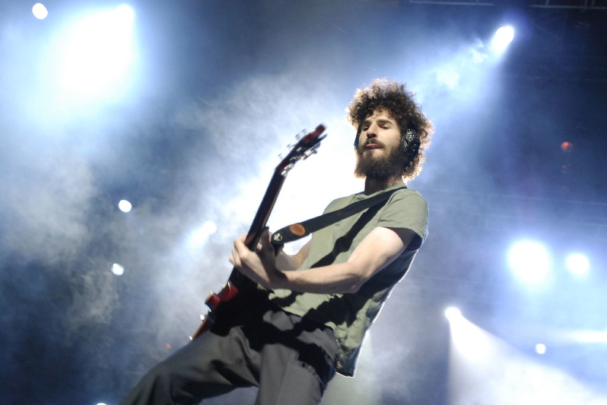

Brad Delson
Integrante de la banda Likin Park
Bradford Phillip Delson, conocido como "BBB (Big Bad Brad)", nacido en 1977 Agoura, California, Estados Unidos. Es el guitarrista líder de Linkin Park. Delson se casó con Elisa Boren en septiembre de 2003 en una boda judía en el Centro Cultural Skirball, tienen tres hijos juntos: Jonah Taylor, nacido el 25 de marzo de 2008; Noa Parker, nacido el 15 de mayo de 2010 y Evan Ruby, nacido el 19 de diciembre de 2012